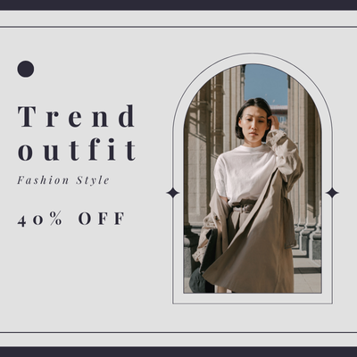
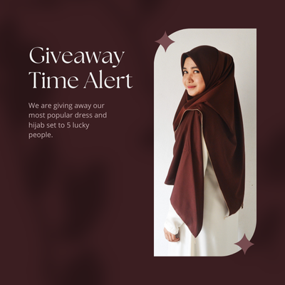
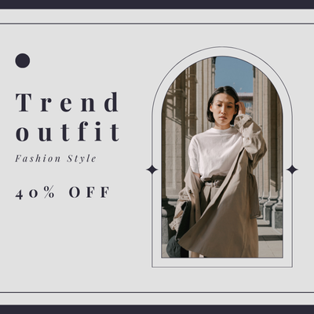
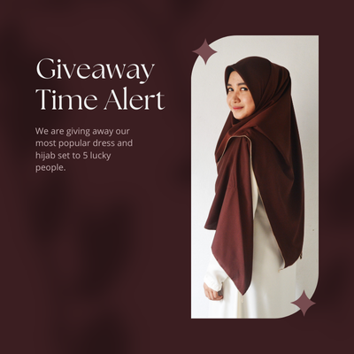

Povestea acestui brand
Brandul nostru a fost creat din dorinta de a oferi produse inovatoare si de calitate superioara, care sa aduca un impact semnificativ in vietile clientilor nostri. Suntem dedicati sa aducem in fiecare casa un strop de rafinament, oferind clientilor nu doar produse, ci si experiente memorabile si transformatoare. Fiecare colectie pe care o lansam reflecta pasiunea noastra profunda pentru designul elegant, functionalitatea imbunatatita si utilizarea celor mai bune materiale. In fiecare detaliu, investim cu grija pentru a atinge cele mai inalte standarde in ceea ce priveste durabilitatea si estetica produselor noastre, avand in vedere si impactul asupra mediului.
In drumul nostru, am intalnit multe provocari, dar fiecare pas a fost un pas mai aproape de perfectiune. Creem produse care combina traditia cu inovarea, aducand un echilibru perfect intre estetica si utilitate, astfel incat fiecare piesa sa fie atat frumoasa, cat si practica. Ne mandrim cu faptul ca produsele noastre sunt apreciate pentru durabilitate, functionalitate si atentie la detalii, oferind solutii care imbunatatesc viata de zi cu zi, facand-o mai usoara si mai placuta. In fiecare proiect, suntem ghidati de dorinta de a depasi asteptarile clientilor nostri si de a le oferi cele mai bune produse care sa le reflecte personalitatea si stilul.
Fiecare produs pe care il oferim este o declaratie de stil si confort, care are scopul de a transforma orice spatiu sau moment intr-o experienta unica. Am invatat ca succesul nostru nu vine doar din oferirea unor produse excelente, ci si din construirea unei relatii puternice, bazate pe incredere si respect, cu fiecare dintre clientii nostri. Prin feedback-ul lor continuu, am reusit sa ne imbunatatim constant si sa ne adaptam cerintelor pietei in schimbare. Este esential sa ascultam si sa intelegem nevoile celor care ne aleg si sa le oferim nu doar produse, ci si o experienta personala, care sa-i faca sa se simta speciali si apreciati.
Viziunea noastra este simpla si clara: sa aducem oamenilor produse care le imbogatesc viata, aducand nu doar functionalitate, ci si un plus de frumusete si armonie. Suntem constienti de impactul pe care il avem asupra mediului si suntem dedicati unui proces de productie sustenabil, care sa protejeze resursele naturale ale planetei. Fiecare produs pe care il lansam este creat cu respect fata de natura, folosind materiale prietenoase cu mediul inconjurator si tehnologii inovative care reduc consumul de energie si de materiale. Astfel, fiecare piesa pe care o oferim nu doar ca imbunatateste viata clientilor nostri, dar si contribuie la protejarea planetei.
De-a lungul anilor, am reusit sa consolidam o echipa talentata si dedicata, care impartaseste aceleasi valori fundamentale ale brandului nostru: inovatie, calitate si responsabilitate. Impreuna, ne straduim sa inovam continuu si sa aducem solutii noi pe piata, care sa raspunda cerintelor in continua schimbare ale clientilor nostri. Fiecare colaborare este o oportunitate de a invata si de a creste, iar acest lucru ne motiveaza sa mergem mai departe cu mai multa pasiune si determinare. In fiecare zi, ne propunem sa facem un pas inainte si sa continuam sa ne imbunatatim produsele si serviciile pentru a oferi cea mai buna experienta posibila clientilor nostri.
In fiecare zi, lucram cu pasiune, devotament si profesionalism pentru a imbunatati continuu experienta clientului nostru. Fiecare proiect pe care il incepem este tratat cu seriozitate si cu respect maxim pentru clientii nostri. Fiecare detaliu este important pentru noi si facem tot posibilul sa ne asiguram ca fiecare produs care ajunge in mana clientilor este perfect. Ne dorim ca toti cei care aleg produsele noastre sa simta ca au facut o alegere inteleapta, care le va aduce atat confort, cat si satisfactie pe termen lung. Valoarea produsului nostru depaseste asteptarile lor si suntem mandri ca putem contribui la imbunatatirea vietii fiecarui client in parte.
In calatoria noastra, am avut parte de momente de succes, dar si de provocari, care ne-au ajutat sa invatam si sa evoluam. Am invatat sa ne adaptam rapid la schimbările pietei si la preferintele in continua schimbare ale consumatorilor. Credem ca progresul constant este cheia pentru a ramane relevanti pe piata si pentru a satisface cerintele clientilor nostri. Fiecare succes pe care l-am avut este rezultatul unei munci asidue si a unui angajament continuu fata de excelenta, iar acest lucru ne-a permis sa devenim un brand de incredere, apreciat de toti cei care ne aleg.
Suntem mandri de fiecare realizare si de fiecare pas facut in directia progresului, iar viziunea noastra este sa devenim lideri pe piata. Ne concentram pe a construi un brand de incredere, care sa fie sinonim cu calitatea, inovarea si responsabilitatea sociala. Viziunea noastra este clara: sa oferim produse care nu doar sa fie utile, dar si sa inspire incredere si apreciere in randul celor care le aleg. Fiecare produs pe care il lansam este un simbol al dedicatiei noastre pentru perfectiune si al angajamentului nostru fata de clientii nostri.
Prin fiecare produs pe care il cream, ne dorim sa aducem un plus de valoare in viata fiecarui client, contribuind astfel la dezvoltarea unui stil de viata mai echilibrat si mai placut. Este important pentru noi sa intelegem nevoile si dorintele acestora, sa le ascultam opiniile si sa le indeplinim asteptarile cu promptitudine si profesionalism. Munca noastra este ghidata de principiul calitatii fara compromisuri, iar fiecare detaliu conteaza. In acest fel, ne asiguram ca fiecare client se simte special si ca produsul pe care il achizitioneaza este perfect adaptat nevoilor sale.
Fiecare experienta cu brandul nostru este un pas spre o viata mai buna. In fiecare proiect, investim pasiune, inspiratie si incredere, iar acest lucru se reflecta in produsele noastre. Ne dorim ca fiecare client sa simta ca a facut o alegere corecta atunci cand a ales sa devina parte din familia noastra. Suntem dedicati sa continuam sa inovam si sa aducem in fata lumii produse care sa raspunda celor mai inalte standarde, avand in vedere atat nevoile consumatorilor nostri, cat si provocarea de a proteja mediul in care traim.
Liste HTML
Principiile noastre:
- Sustenabilitate
- Materiale naturale
- Stil
- Comoditate
- Calitate
Materiale folosite:
- Casmir
- Lana
- Matase
- Bumbac
Galerie Foto

 


